GPT-5
La fin
GPT-5 est monstrueux.
Et le progrès ne s’arrêtera pas là.
Je me souviens de l’inquiétude de pas mal de collègues développeurs à la popularisation de ChatGPT fin 2022. J’entendais partout : « L’IA prend notre boulot. » Ça a fait pschitt quand, quelques semaines plus tard, GPT sortait des conneries dès qu’on lui demandait un simple menu déroulant en CSS.
Quand une situation arrive, j’essaie toujours de prendre du recul.
Je m’élève, je regarde de haut, comme si je ne faisais pas partie de
l’échiquier. J’analyse, j’observe, je vois. On ne peut se faire un
avis correct qu’en restant détaché de l’événement.
Qui dit quoi ? Qui réagit ? Quels sont les intérêts de chacun ? Les enjeux ? Pourquoi pense-t-on cela ?
Dans la vie, il faut souvent dissocier les intérêts des réelles inquiétudes pour mieux comprendre le monde qui nous entoure.
Et aujourd’hui, on y est.
L’IA propose de plus en plus de choses intelligentes et efficaces.
Elle est devenue assez puissante et autonome pour, à partir d’un
prompt simple, donner des réponses complexes et (plus ou moins)
correctes.
GPT-5 est sorti. J’en avais entendu beaucoup de bien et, en l’essayant, j’ai découvert une IA extrêmement capable, sensible et puissante. Fini le give up après un énième prompt raté. Aujourd’hui, j’ai une IA qui me donne de vrais résultats sans m’arracher les cheveux (clindoeil).
J’ai fait le test : j’ai créé une petite application de suivi sportif. Moi qui fait des razzias contre toutes ces applis bullshit « calepins sportifs » et « nutri-trackers » remplis de pubs et de revente de données, en cherchant toujours LA bonne app open source, sûre et fiable pour suivre mon activité physique et ma nutrition… je m’y suis attelé. Un truc simple : un suivi de poids tout bête, avec graphique et fonctionnalités basiques. À coups d’Android Studio et de quelques ajustements, en 1h, j’avais mon appli prête à l’emploi sur mon téléphone.
Un seul prompt, quelques retouches, et ça a suffi pour obtenir quelque
chose de fonctionnel.
Simple, je vous l’accorde, mais moi qui aime tester les limites de
l’IA, ça n’avait jamais été aussi facile.
J’ai aussi testé sur mon blog (H3ll0_w0rld!).
Un blog qui me sert à prendre des notes, écrire mes pensées et avis,
faire des labs, des tests, exprimer ma passion. Avant publication, en
bon perfectionniste, je l’ai codé jour et nuit, je voulais quelque
chose de simpliste et complet. Puis je me suis dit que le message
comptait plus que la forme, et je l’ai publié, pas totalement
satisfait du visuel, mais c’était aussi son charme. Un peu comme
Phrack Magazine, Sam Altman ou encore GeoHotz (d'ailleurs, le nom de
mon blog « singularity » est inspiré de lui 😉)
Il y a quelques jours, j’ai posé une question simple à GPT-5 : il m’a sorti un canva extrêmement complet, responsive inclus. Comme je n’utilise pas de backend et que je fais presque tout à la main, l’adaptation m’a pris du temps, mais voilà enfin le design que j’avais en tête depuis le début. GPT-5 m’a aidé à refondre complètement le design de mon blog en trois jours. Et ce qui a pris le plus de temps, c’était les copier-coller des balises (parce que GPT n’est pas encore très à l’aise pour copier une grande quantité d’infos : il modifie souvent mes articles et généralise).
Je ne sais pas ce que l’IA réserve aux développeurs, mais je pense surtout qu’elle nous fait gagner BEAUCOUP de temps sur certaines tâches.
M’inspirer d’un design complet, concevoir les fonctionnalités, tester, déboguer, me prendre la tête sur le fameux point-virgule manquant , intégrer tout ça à l’ancien design, tout gérer de A à Z… en solo, ça m’aurait pris bien plus de temps. Là, en trois jours, c’était plié, et j’en suis encore impressionné.
Tout le monde ne peut pas s’improviser développeur, mais avec un peu de curiosité et d’intérêt, je pense que n’importe qui ayant accès à l’IA peut trouver son filon. Et c’est à la fois effrayant et incroyable.
Les nouveautés
Je profite donc de cet article pour vous partager les dernières mises
à jour du blog.
Voici tous les changements :
- Barre de navigation fixée en haut de la page
- Thème sombre ajouté
- Petit easter egg : des bribes de code aléatoires s’affichent à côté du texte d’intro
- Bannière contenant les trois derniers articles
- Lien vers mon compte LinkedIn
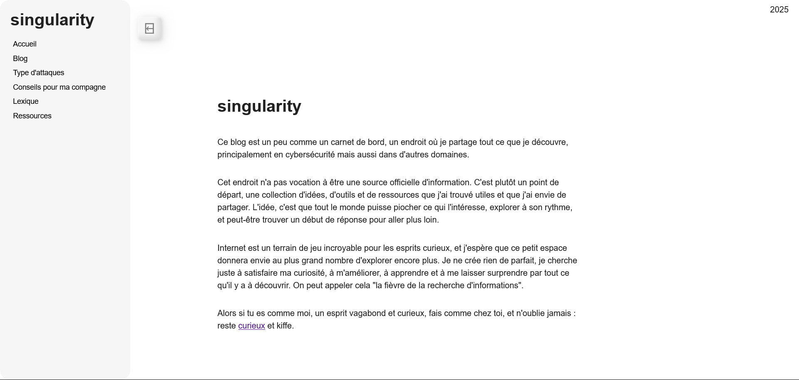
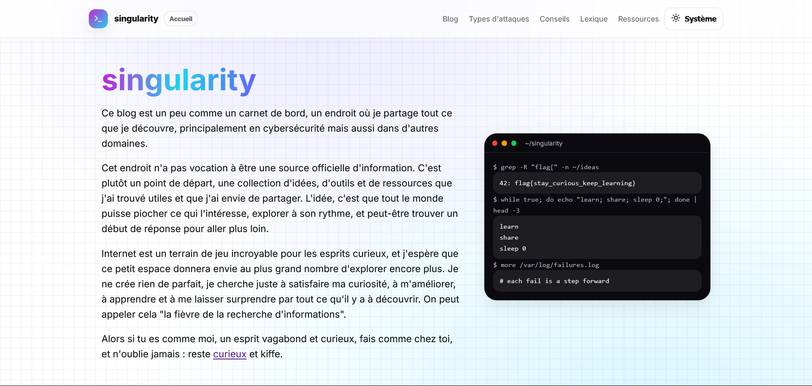
- Barre de recherche ajoutée
- Tags sur les articles
- Tri des articles par tags
- Vignette pour chaque article
- Courte description sous chaque article
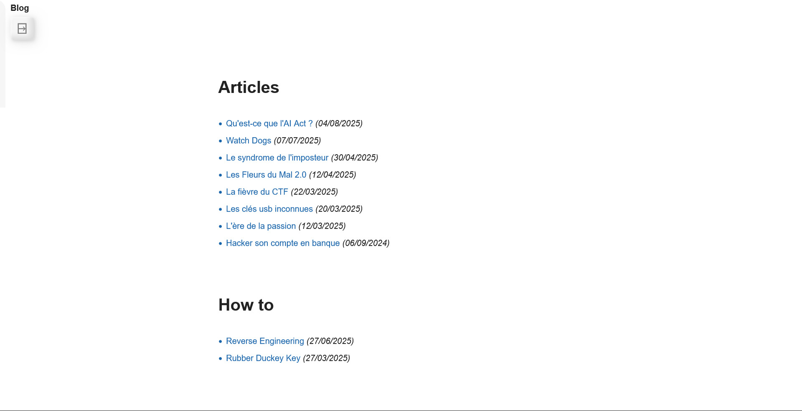
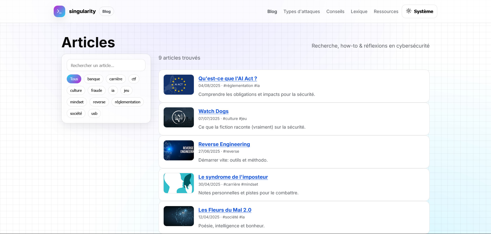
- Sommaire cliquable généré à partir des titres et sous-titres
- Temps de lecture estimé
- Barre de progression en haut de page pour suivre votre progression dans l’article
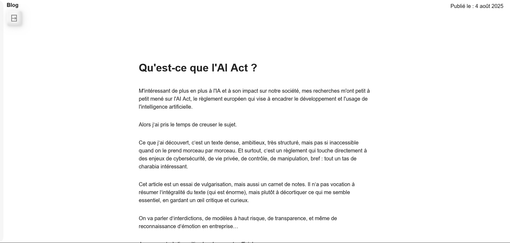
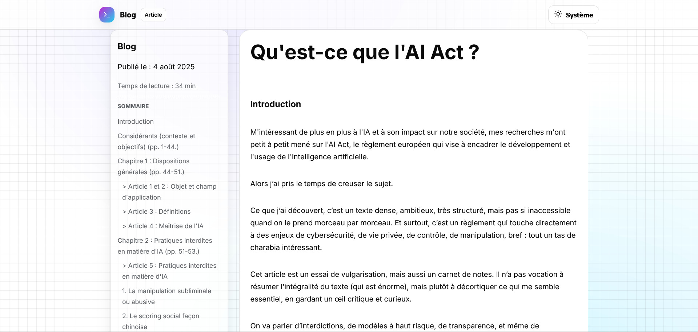
- Barre de recherche ajoutée
- Sommaire des catégories d’attaques
- Tri des attaques par catégorie
- Clic sur le nom d’une attaque pour la déplier et voir son contenu
- Ajout d’alias (noms alternatifs) à côté du nom de l’attaque
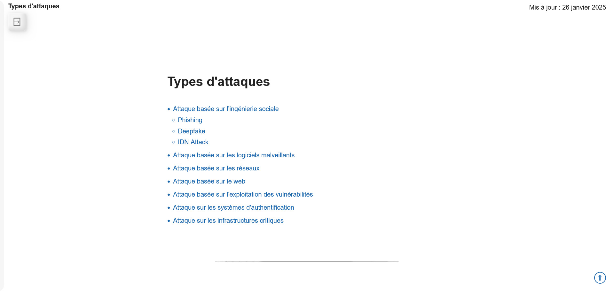
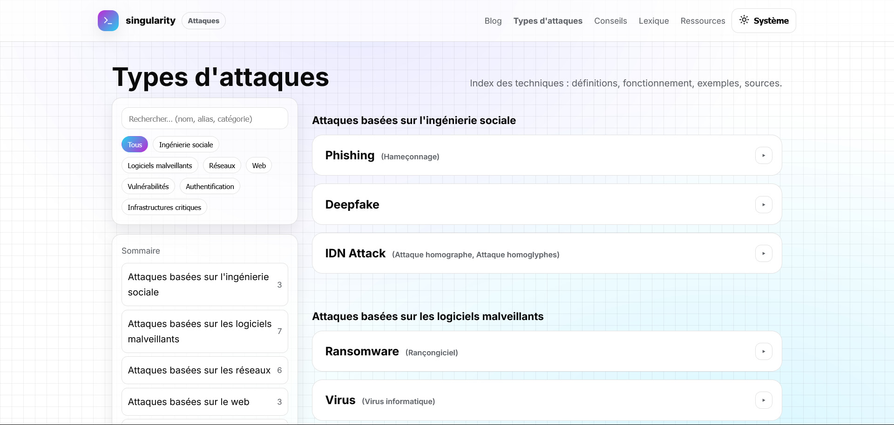
- Barre de recherche plus cohérente
- Sommaire alphabétique
- Filtre par première lettre des mots
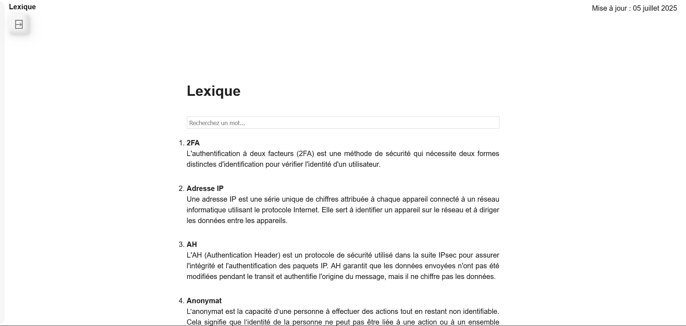
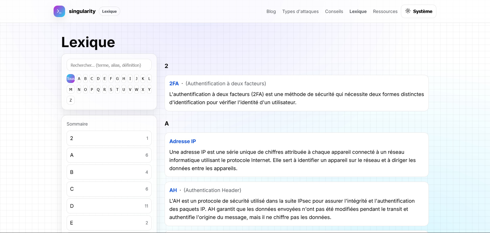
- Barre de recherche ajoutée
- Sommaire des catégories de ressources
- Tri des ressources par catégorie
- Ajout d’un favicon à côté de chaque ressource
- Lien direct à côté de chaque ressource
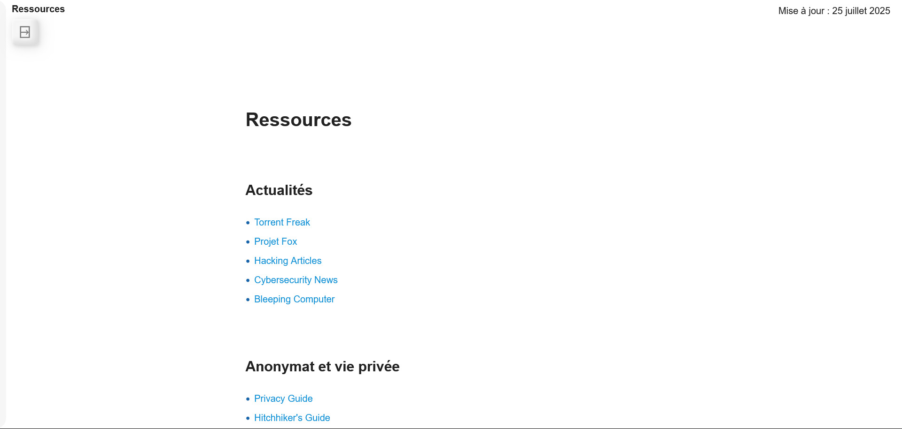
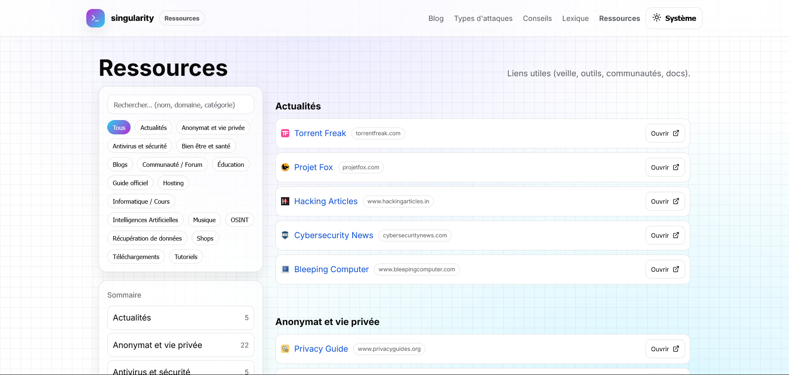
Si vous voulez visiter l’ancien design, il est toujours dispo sur ce lien : https://semihbk.github.io/oldblog/.
Soyons clairs, GPT-5 m’a aussi servi de la daube. Les bonnes pratiques étaient souvent « presque » respectées, mais il y avait du déchet à nettoyer : duplications, changement complet de design, responsive manqué, CSS bancal. J'ai remarqué qu'il ne pouvait pas faire quelque chose d'extrêmement complet. On a beau lui donner un prompt ingénieux, il finira au bout de quelques minutes de thinking à faire n'importe quoi.
En revanche, en mode pair-programmer, il est très bon : dès que je pointais un bug précis, il savait expliquer la cause et proposer une correction crédible (ce qu'il n'y avait pas souvent avec gpt-4o par exemple).
Si je dois conclure avec quelque chose, l'IA est un vrai accélérateur, et elle continue de monter en puissance. Mais ça reste un outil, pas un oracle. L'IA ne doit pas penser à notre place, elle doit assister l'humain. Les enjeux éthiques et de responsabilité restent cruciaux.
Faites attention aux données que vous partagez.
Je vois de plus en plus de personnes interagir avec elle comme si c’était un humain. L'IA (en particulier les LLM) peut sembler avoir un mode de fonctionnement similaire sur certains points (par exemple, la prise en compte du contexte), mais elle ne "comprend" pas le monde.
Elle traite des données et calcule des probabilités, pas des émotions ni des intentions. Elle n'est pas consciente, elle ne ressent rien. C'est un outil puissant mais qu'il faut utiliser avec discernement.
On reviendra sur son fonctionnement dans un prochain article.